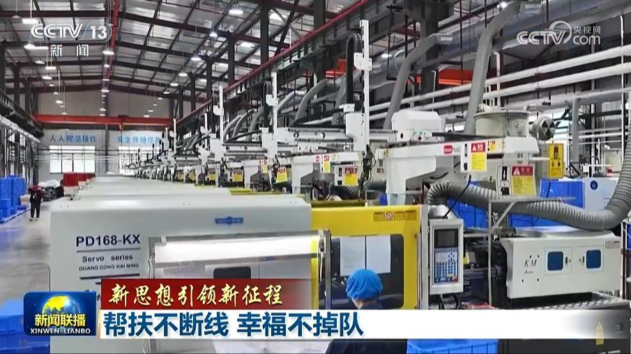
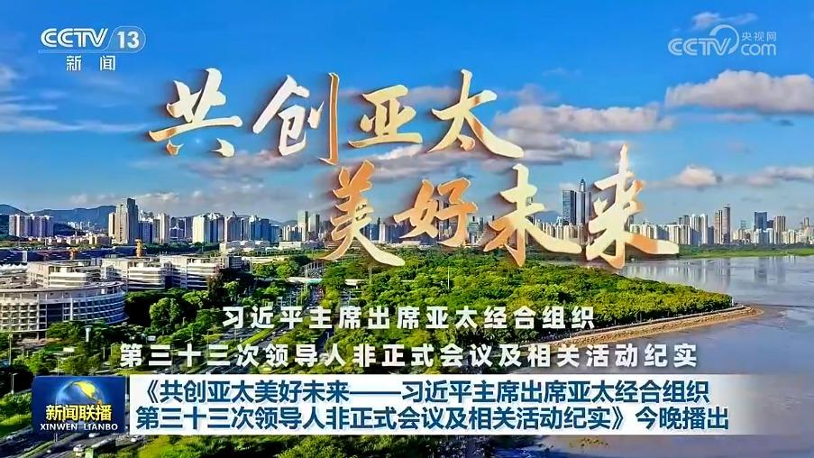
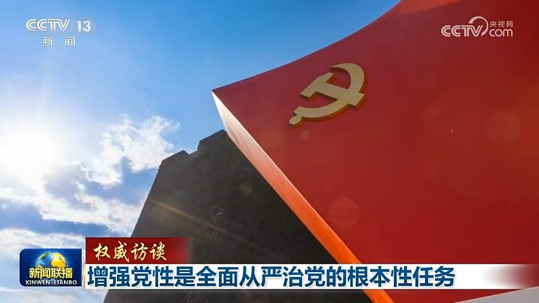
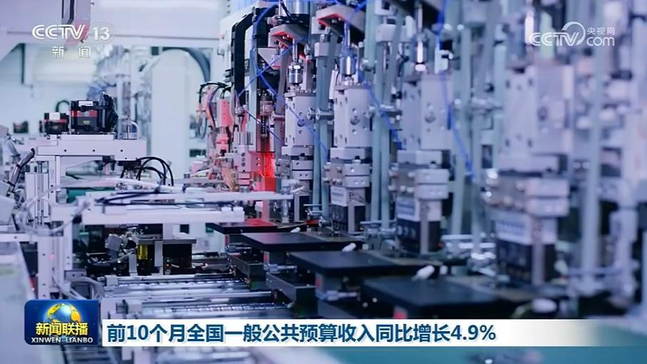
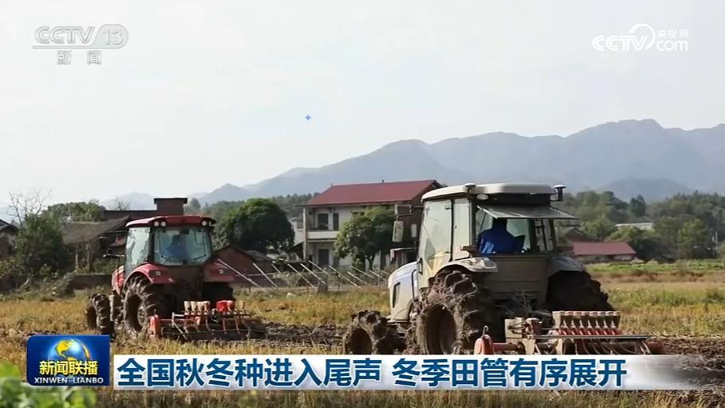
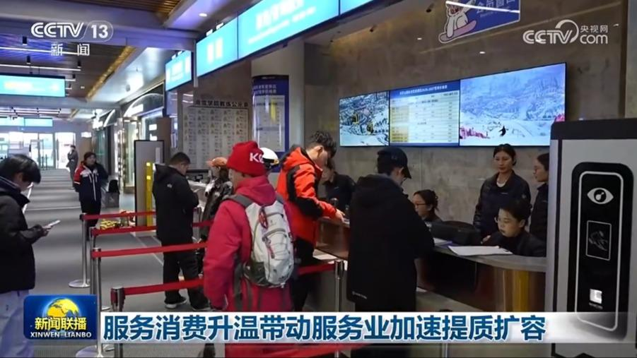
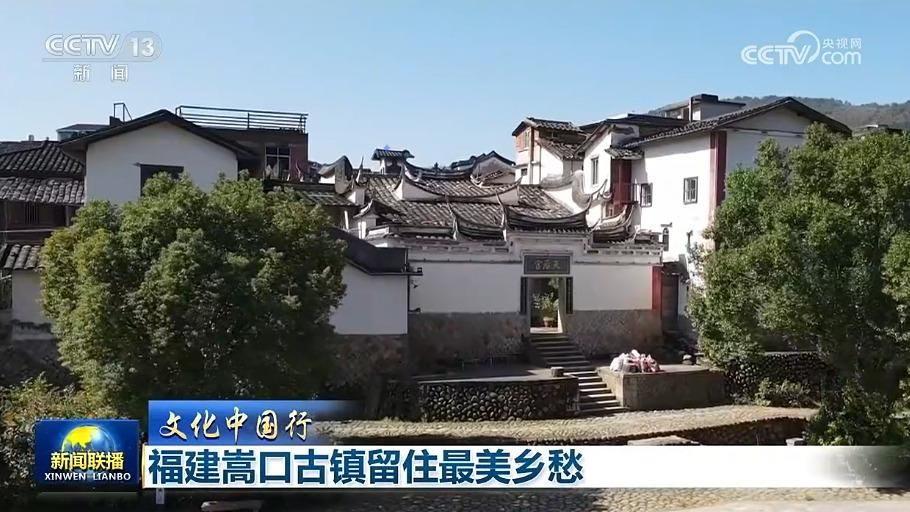
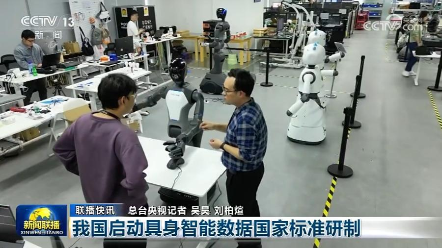
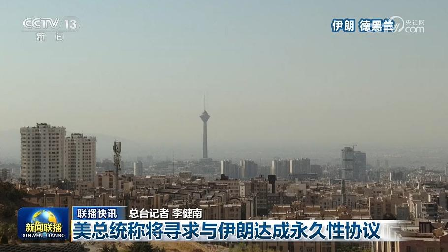
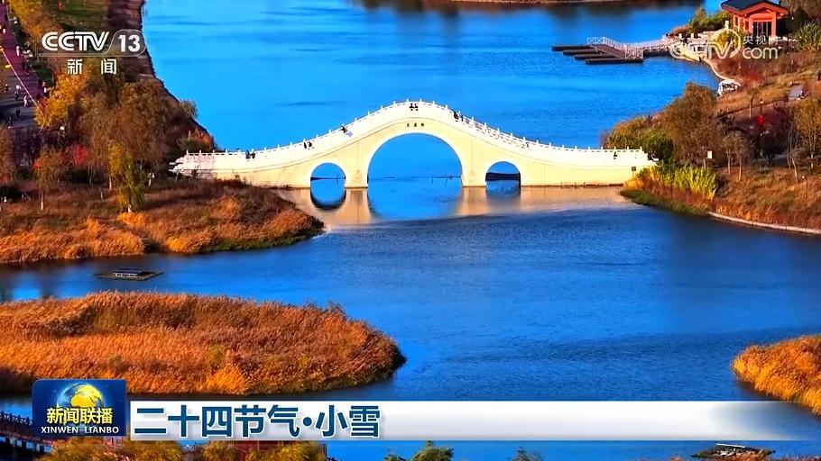

01

【新思想引领新征程】帮扶不断线 幸福不掉队
习近平总书记强调，要持续巩固拓展脱贫攻坚成果，把常态化帮扶纳入乡村振兴战略统筹实施，守牢不发生规模性返贫致贫底线。


习近平总书记强调，要持续巩固拓展脱贫攻坚成果，把常态化帮扶纳入乡村振兴战略统筹实施，守牢不发生规模性返贫致贫底线。

由中央广播电视总台制作的电视专题片《共创亚太美好未来——习近平主席出席亚太经合组织第三十三次领导人非正式会议及相关活动纪实》将于今晚（11月22日）黄金时间在总台央视综合频道、新闻频道并机播出。

党的二十届五中全会审议通过了《中共中央关于持之以恒推进全面从严治党若干重大问题的决定》（以下简称《决定》），对持之以恒推进全面从严治党作出了系统部署。《决定》提出，增强党性是全面从严治党的根本性任务。如何理解这一根本性任务？请看今天（11月22日）的《权威访谈》。

财政部数据显示，今年1—10月，全国一般公共预算收入19.57万亿元，同比增长4.9%，实现平稳增长。

眼下，全国秋冬种进入尾声，主产区因地制宜开展冬季田管，为来年丰收夯实基础。农业农村部最新农情调度显示，目前冬油菜播种已基本结束。湖南今年在18个县开展油菜新品种展示示范，同时大力推广机械化播种、移栽等技术，全省油菜机械直播面积达769万亩。在东安县，今年新投入应用的油菜播种机可以精准控制下籽量和播种深度，出苗更整齐，油菜苗抗冻能力也更强。

今年以来，文旅体育等服务消费持续火热，各类消费新场景新业态加速涌现，带动服务业提质扩容，内需潜力不断释放。
我国北方地区已经全面开启冬季供暖，煤炭、天然气以及清洁电能等能源供应协同发力，全力保障群众温暖过冬。

乡愁，是中国人对故土山水人文的悠长眷恋。今天（11月22日）的《文化中国行》带您走进中国历史文化名镇——福建永泰嵩口镇。这里不搞大拆大建，以“最小干预”的“针灸式”改造理念，守住百年古厝的历史风貌，让原居民安居乐业，让浓浓的乡愁在这片绿水青山间生生不息。

我国启动具身智能数据国家标准研制
国际人士表示，习近平主席在亚太经合组织第三十三次领导人非正式会议及相关活动中发表的一系列重要讲话，围绕亚太共同体建设提出中国方案、指明发展方向，为共创亚太美好未来汇聚力量，也对全世界具有深远意义。

美总统称将寻求与伊朗达成永久性协议

小雪是冬季的第二个节气。节目的最后，我们一起感受这个时节的自然之美、文化之韵。